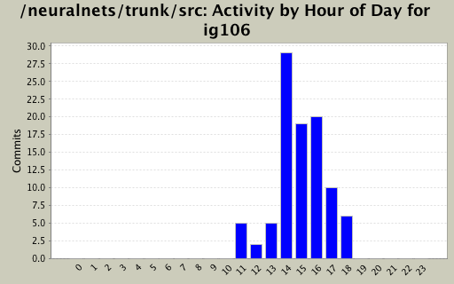
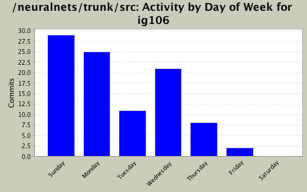
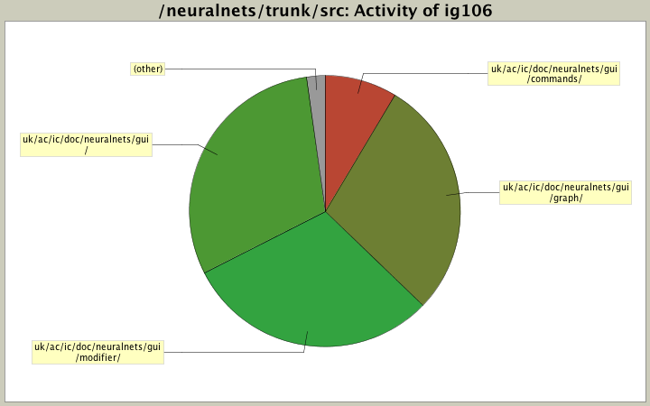

| Directory | Changes | Lines of Code | Lines per Change |
|---|---|---|---|
| Totals | 96 (100.0%) | 2164 (100.0%) | 22.5 |
| uk/ac/ic/doc/neuralnets/gui/ | 48 (50.0%) | 657 (30.4%) | 13.6 |
| uk/ac/ic/doc/neuralnets/gui/modifier/ | 13 (13.5%) | 656 (30.3%) | 50.4 |
| uk/ac/ic/doc/neuralnets/gui/graph/ | 19 (19.8%) | 618 (28.6%) | 32.5 |
| uk/ac/ic/doc/neuralnets/gui/commands/ | 13 (13.5%) | 187 (8.6%) | 14.3 |
| uk/ac/ic/doc/neuralnets/gui/graph/listener/ | 3 (3.1%) | 46 (2.1%) | 15.3 |

Refactoring UndoNodes.java to RemoveNodes.java
230 lines of code changed in 5 files:
Fixed major redo bug.
85 lines of code changed in 2 files:
Added Comments
232 lines of code changed in 1 file:
Deleted View.java
0 lines of code changed in 1 file:
Added Comments. Removed DummyCommand.java
6 lines of code changed in 2 files:
Added Comments
259 lines of code changed in 8 files:
Added Comments
14 lines of code changed in 1 file:
Undoing and redoing adding works now.
71 lines of code changed in 1 file:
26 lines of code changed in 2 files:
1 lines of code changed in 1 file:
ZooZoomListener.java added. Added to sampleplugins on trac.
Zoom buttons now enabled when GUINetwork is selected and disabled when unselected.
43 lines of code changed in 5 files:
37 lines of code changed in 2 files:
Created CommandEvent and made GUIToolbar implement Statistician so that undo/redo events can run in parallel and enable/disable toolbar buttons accordingly - Chris and ismail
127 lines of code changed in 4 files:
Edited undo and redo stuff, began to add the ability to remove GUINetworks - Ismail and Chris
192 lines of code changed in 6 files:
Added commands package, and added undo and redo buttons to the toolbar - Chris and Ismail
148 lines of code changed in 5 files:
Got a coolbar in the GUI. Managed to add the zoom in and zoom out buttons with listeners. You can zoom in fine...but after that you cant really click anything on the graph. It'll crash.
90 lines of code changed in 2 files:
171 lines of code changed in 4 files:
Updating the GUIBridge with style.
1 lines of code changed in 1 file:
30 lines of code changed in 1 file:
10 lines of code changed in 2 files:
(11 more)